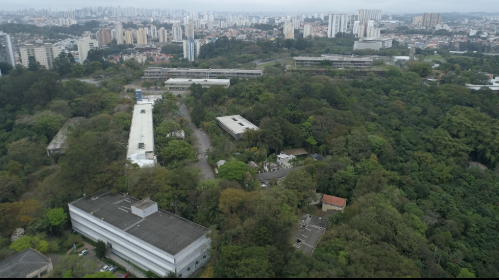
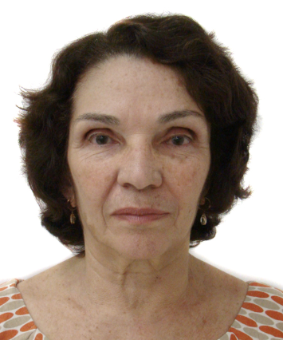
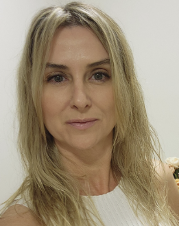
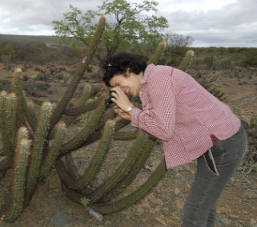
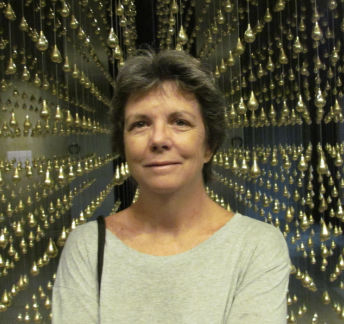
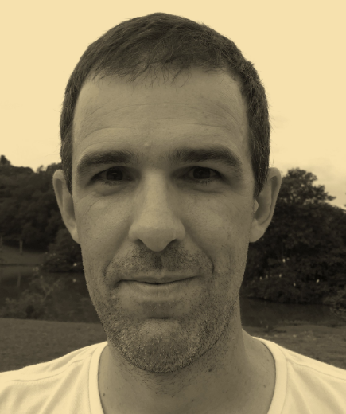
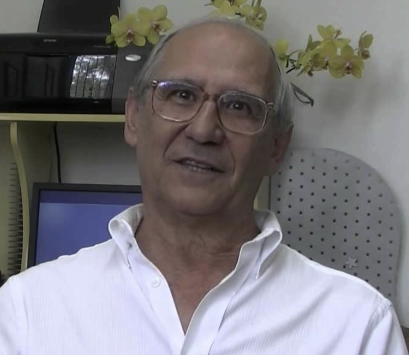
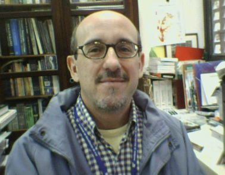

A Regional Rio de Janeiro-São Paulo da Sociedade Botânica do Brasil (SBB) apresenta a IV JORNADA RJ-SP DE BOTÂNICA, evento que será realizado majoritariamente no Instituto de Biociências da Universidade de São Paulo, em São Paulo, SP, de 1 a 4 de julho de 2026.
Estão programadas palestras, mesas-redondas, minicursos teóricos e oficinas teórico-práticas, além de apresentações de painéis, sobre temas nas várias áreas da Botânica, voltados especialmente a estudantes de graduação.
O tema central da jornada é a "Botânica como Scientia amabilis", designação cunhada por Carolus Linnaeus no século XVIII, significando-a como uma ciência adorável, que desperta interesse e afeição naqueles que se dedicam a ela, refletindo a beleza e a importância do estudo das plantas. Atualmente, é missão premente dos biólogos envidar esforços visando a minimizar a impercepção botânica (também denominada "cegueira botânica") vigente desde meados do século passado, caracterizada como a incapacidade humana de reconhecer a importância das plantas na biosfera e no nosso cotidiano, levando à dificuldade em perceber os aspectos estéticos e biológicos exclusivos das plantas e mesmo a entender as plantas como seres inferiores aos animais.
Nesse contexto, as atividades desta Jornada buscam abarcar grande amplitude de enfoques em temas relacionados às plantas, da morfologia e anatomia à sistemática, fisiologia, química, genética, evolução, filogenia, ecologia e biogeografia, sem deixar de fora aspectos da jardinagem e do paisagismo, da conservação e do ensino. Pretendemos propiciar e avaliar tanto abordagens em nível de fundamentação e de paradigmas já consolidados, quanto introduzir e discutir métodos e ferramentas modernos de estudo, com as novidades e dados gerados recentemente.
Esperamos com essas atividades ampliar a visão e o conhecimento dos alunos sobre as plantas, instigando neles um maior interesse na ciência botânica e áreas correlatas, assim como despertar o deslumbramento prazeroso ante esses seres tanto belos quanto importantes na biosfera e na vida humana. Assim a Jornada terá contribuído para aprimorar a formação acadêmica e científica dos alunos e quiçá também para seu amadurecimento como cidadãos conscientes e aptos a uma vida plena.
E-mail oficial para contato: jornada.de.botanica.rj.sp@gmail.com
| 01/JULHO | 02/JULHO | 03/JULHO | |
|---|---|---|---|
| 09h | (09h-10h) Credenciamento |
(09h-12h) Minicursos e Oficinas 9-16 |
(09h-12h) Minicursos e Oficinas 17-25 |
| 10h | (09h30-12h30) Minicursos e Oficinas 1-8 |
||
| 11h | |||
| 12h | |||
| 13h | Horário reservado para almoço | ||
| 14h |
(13h30-14h) Credenciamento
(14h-14h30) Cerimônia de Abertura
|
(13h30-14h30) Sessão de Painéis I |
(13h30-14h30) Sessão de Painéis II |
| 15h | (14h30-15h30) Palestra de Abertura – Fábio Pinheiro |
(14h30-15h30) Palestras 3 e 4
(14h30-15h30) Mesas Redondas 4-6
|
(15h-16h) Palestra de Encerramento – Ana Maria Giulietti |
| 16h |
(15h45-17h) Palestras 1 e 2
(15h45-17h) Mesas Redondas 1-3
|
(15h45-17h) Palestra 5
(15h45-17h) Mesas Redondas 7-8
|
(16h30-17h) Cerimônia de Encerramento |
| 17h | (17h-18h) Reunião Seção Regional RJ-SP (SBB) |
(17h-18h) Comemoração FFESP 25 anos |
(17h-18h) Coquetel de Confraternização |
BR, SP
São Paulo, Butantã, 05508-090
Rua do Matão, nº 277

O evento ocorrerá no Instituto de Biociências da Universidade de São Paulo (IB-USP), Campus Cidade Universitária Armando de Salles Oliveira, localizado na zona Oeste da cidade de São Paulo, nas redondezas do bairro do Butantã. O IB-USP respira História, sendo criado em 1969 enquanto formava profissionais pelo curso de História Natural da Faculdade de Filosofia, Ciências e Letras. A tradição em pesquisa é ainda mais antiga, iniciada já em 1934 por seus fundadores. O Departamento de Botânica (DB) do IB-USP é uma referência em ensino e pesquisa em nível internacional, mantendo um Programa de Pós-Graduação que detém o mais elevado conceito atribuído pela CAPES à área de Botânica do país. Botânicos renomados na ciência brasileira exerceram no DB parte ou toda sua trajetória acadêmica, destacando-se num panorama histórico Felix Rawitscher, seu fundador; Aylthon Brandão Joly, pioneiro nos estudos de algas do país e seu principal discípulo Eurico Cabral de Oliveira; Berta Lange de Morretes e Nanuza Luiza de Menezes na Anatomia; Mário Guimarães Ferri e Leopoldo Magno Coutinho no âmbito da Ecologia; Kurt Günther Hell e Gilberto Barbante Kerbauy na Fisiologia; Antonio Salatino na Fitoquímica; Ana Maria Giulietti na Sistemática e evolução. Os laboratórios do DB estão plenamente equipados com aparelhagem de última geração, projetando-o em sintonia com as mais recentes tecnologias.
Entre os grandes espaços do DB estão o Fitotério, um espaço composto por estufas, casas de vegetação e áreas ajardinadas para uso didático e experimental, e o Herbário SPF, uma coleção fundada em 1937 e que abriga cerca de 300 mil coleções de algas, plantas vasculares e madeiras, uma importante referência internacional, ambos disponíveis para visita pelos inscritos na IV Jornada Rio-São Paulo de Botânica durante o evento.







Veja mais informações ou faça a sua submissão
| Categoria | Até 10/04/2026 23:59 | Até 21/06/2026 23:59 | Até 01/07/2026 23:59 |
|---|---|---|---|
| Graduação – Sócio SBB | |||
| Pós Graduação – Sócio SBB | |||
| Profissional – Sócio SBB | |||
| Técnico Nível Médio ou Aposentado – Sócio SBB | |||
| Ensino Médio / IC Júnior – Sócio SBB | |||
| Professor Ensino Básico – Sócio SBB | |||
| Graduação – Não Associado | |||
| Pós Graduação – Não Associado | |||
| Profissional – Não Associado | |||
| Professor de Ensino Básico – Não Associado | |||
| Técnico Nível Médio ou Aposentado – Não Associado | |||
| Ensino Médio / IC Júnior – Não Associado |